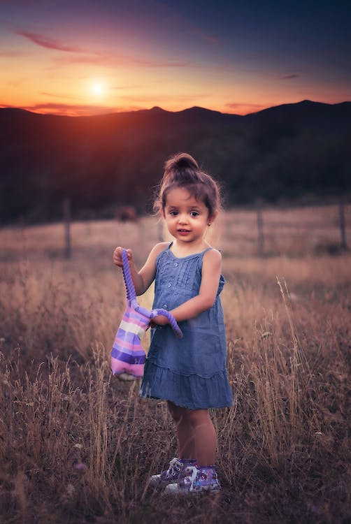

Home


Brie @Sktch_ComedyFan . 3m
Giving standup comedy a go. Open mic starts at 7, hit me up if you want ticket #heregoesnothing

1


8


Harold @h_wang88 . 10m
Vacation is going great

3
5
14

andrea  @andy_landerson . 3m
@andy_landerson . 3m
@andy_landerson . 3mHow many lemons do I need to make lemonade
9
4
2
Brie @Sktch_ComedyFan . 3m
had a goodtime in the evening walk
6
5
1
Tony @Stark_gaming . 3m
Had a nice time in Gaming #thegamingclub

5
2

Trends for you

Trending worldwide
#BreakingNews
Space
Lunar photography improves the discovery of the moon

10,094 people are Tweeting about this
Trending worldwide
#WorldNews
125K Tweets
5,094 people are Tweeting about this
Trending worldwide
#BreakingNews
Animals
These cats are ready for #InternationalCatDog

2,757 people are Tweeting about this
Trending worldwide
#GreatestOfAllTime
100K Tweets
4,123 people are Tweeting about this
Show More
Who to follow

Jon Doe
@reachjon_deo

Michael Scott
@dunder_scott

Michael Scott
@dunder_scott
Show More